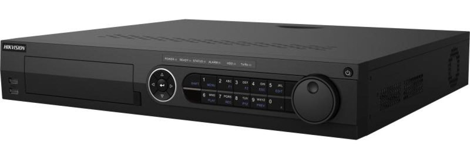

كل المنتجات ← كاميرات وأجهزة هيكفيجن
الموديل: iDS-7332HUHI-M4/S

| الماركة | هيكفيجن |
|---|---|
| الموديل | iDS-7332HUHI-M4/S |
| نوع المنتج | جهاز تسجيل DVR |
| الحماية المحيطية | |
| تحليل الأشخاص والمركبات | Up to 16-ch, for channel 1/2/3/4/9/10/11/12/17/18/19/20/25/26/27/28 only |
| كشف الحركة 2.0 | |
| تحليل الأشخاص والمركبات | Deep learning-based motion detection 2.0 is enabled by default for all analog channels, it can classify human and vehicle, and extremely reduce false alarms caused by objects like leaves and lights; Quick search by object or event type is supported; |
| الفيديو والصوت | |
| مدخلات فيديو IP | 32-ch (up to 64-ch); Up to 12 MP resolution; Support H.265+/H.265/H.264+/H.264 IP cameras |
| Analog Video Input | 32-ch; BNC interface (1.0 Vp-p, 75 Ω), supporting coaxitron connection |
| النطاق الوارد | 320 Mbps |
| النطاق الصادر | 256Mbps |
| HDTVI Input | 8 MP, 3K, 5 MP, 4 MP, 3 MP, 1080p25, 1080p30, 720p25, 720p30 |
| AHD Input | 5 MP, 4 MP, 1080p25, 1080p30, 720p25, 720p30 |
| HDCVI Input | 4 MP, 1080p25, 1080p30, 720p25, 720p30 |
| CVBS Input | PAL/NTSC |
| مخرج CVBS | 1-ch, BNC (1.0 Vp-p, 75 Ω), resolution: PAL: 704 × 576, NTSC: 704 × 480 |
| HDMI 1 Output | 1-ch, 1920 × 1080/60Hz, 1280 × 1024/60Hz, 1280 × 720/60Hz, 1024 × 768/60Hz |
| HDMI 2 Output | 1-ch, 4K (3840 × 2160)/30Hz, 2K (2560 × 1440)/60Hz, 1920 × 1080/60Hz, 1280 × 1024/60Hz, 1280 × 720/60Hz, 1024 × 768/60Hz |
| وضع إخراج الفيديو | HDMI1/VGA simultaneous output, HDMI2 independent output |
| Audio Input | 4-ch, RCA (2.0 Vp-p, 1 KΩ) |
| مخرج الصوت | 1-ch, RCA (Linear, 1 KΩ) |
| صوت ثنائي الاتجاه | 1-ch, RCA (2.0 Vp-p, 1 KΩ) (independent) |
| مخرج VGA | 1-ch, 1920 × 1080/60Hz, 1280 × 1024/60Hz, 1280 × 720/60Hz, 1024 × 768/60Hz |
| Synchronous Playback | 16-ch |
| التسجيل | |
| Video Compression | H.265 Pro+/H.265 Pro/H.265/H.264+/H.264 |
| Encoding Resolution | 8 MP/3K/5 MP/4 MP/3 MP/1080p/720p/WD1/4CIF/VGA/CIF |
| معدل الإطارات | Main stream: 8 MP@8 fps/3K@12 fps/5 MP@12 fps/4 MP@15 fps/3 MP@18 fps 1080p/720p/WD1/4CIF/VGA/CIF@25 fps (P)/30 fps (N) Sub-stream: WD1/4CIF/CIF@25 fps (P)/30 fps (N) |
| Video Bitrate | 32 Kbps to 10 Mbps |
| Dual-stream | Support |
| Stream Type | Video, Video & Audio |
| Audio Compression | G.711u |
| Audio Bitrate | 64 Kbps |
| الشبكة | |
| Remote Connection | 128 |
| Network Protocol | TCP/IP, PPPoE, DHCP, Hik-Connect, DNS, DDNS, NTP, SADP, NFS, iSCSI, UPnP™, HTTPS, ONVIF, SNMP |
| Network Interface | 2, RJ45 10M/100M/1000M self-adaptive Ethernet interface |
| الواجهات المساعدة | |
| SATA | 4 SATA interfaces |
| eSATA | Support |
| Capacity | Up to 12 TB capacity for each disk |
| Serial Interface | RS-232, RS-485 (full-duplex), Keyboard |
| Alarm In/Out | 16/4 |
| USB Interface | Front panel: 2 × USB 2.0, Rear panel: 1 × USB 3.0 |
| عام | |
| مصدر الطاقة | 100 to 240 VAC, 50 to 60 Hz |
| Consumption | ≤ 55 W (without HDD) |
| حرارة العمل | -10 °C to +55 °C (+14 °F to +131 °F) |
| Working Humidity | 10% to 90% |
| Dimension (W × D × H) | 440 × 399 × 72 mm (17.3 × 15.7 × 2.8 inch) |